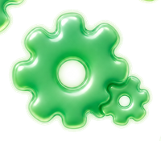
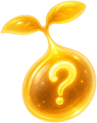
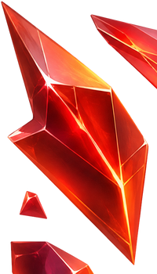
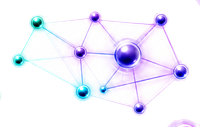

💡
思
THINK
把模糊的焦慮變成具體問題。說不清楚的煩躁，先寫下來、拆開來，才有辦法被討論。

把 AI 卡關丟進議題池 → 帶著你的句子的方塊落下 → 排滿一列就「消行歸納」，換得採集分數。桌機 ←→ 移動、↑ 旋轉、↓ 軟降、Space 硬降；手機用下方按鈕或左右滑動。你的分數與議題會被記住。


把模糊的焦慮變成具體問題。說不清楚的煩躁，先寫下來、拆開來，才有辦法被討論。
讓不同觀點互相校正。實作者、懷疑者、提問者坐在同一桌，答案在碰撞中長出來。
把討論轉成下一步行動。離場前每個人帶走一件可以立刻做的事，不讓靈感留在現場。
不需要準備簡報，不需要是專家。一個卡住你的問題，就是最好的入場券。
把問題寫在便利貼上，貼上牆。你會發現：原來卡住你的，也卡住了別人。
用腳投票，走向你最有感的議題桌。Open Space 法則：走到哪，哪裡就是對的地方。
沒有主持人壟斷發言。經驗、質疑、反例輪流上桌，讓觀點互相校正。
散場前寫下你的下一步：要試的工具、要找的人、要驗證的想法。派對結束，行動開始。

點角色按鈕，或直接拖曳雷達頂點，捏出你的思辨能量形狀。五種主型態，沒有對錯。
帶著卡關進場，
帶著思辨獸離開。